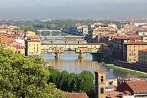
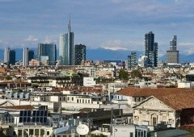
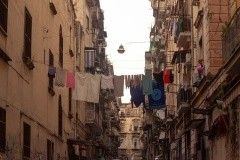
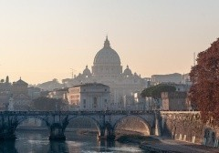
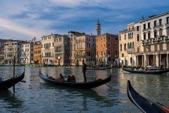
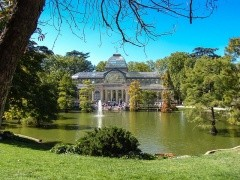

Firenze
Firenze, az olasz reneszánsz bölcsője, az opera szülőhelye, ma is egy műalkotás: Olaszország egyik legszebb városa értékes múzeumokkal, csodálatos utcákkal és terekkel, káprázatos építészeti kincsekkel, de sokszor zsúfoltsággal és drága szállásokkal várja a látogatókat. Az alábbiakban bemutatjuk Firenze legérdekesebb látnivalót. Kitérünk a repülőtéri bejutásokra, tömegközlekedési és parkolási információkra, valamint a Firenze környéki kirándulási lehetőségekre, valamint kiválogattuk a legjobb ár/érték arányú szállásokat is.
Milánó
Milánó Olaszország 2. legnagyobb, ugyanakkor legjelentősebb városa. Nem annyira olaszos atmoszférájú, mint pl. Róma vagy Firenze, azoknál modernebb. De a városban van 1-2 jó látnivaló, és Milánóból könnyen és gyorsan elérhetők gyönyörű városok és szép tavak. Az alábbiakban bemutatjuk Milánó legjobb látnivalóit, eljutással, aktuális belépőjegyekkel és nyitvatartásokkal. Kitérünk a Milánó környéki tavakra és városokra is. A Milánói tömegközlekedésről, reptéri bejutásokról is olvashatók információk, valamint kiválogattuk a legjobb ár/érték arányú szállásokat is.
Nápoly
Nápoly, bár sokak számára kaotikus lehet, csodálatos és érdekes látnivalókat nyújt. És a környékén is lenyűgöző látványosságok vannak, mint pl. a Vezúv vagy Pompeji, valamint csodás tengerpartok és szigetek is. Az alábbiakban részletesen, hasznos tippekkel mutatjuk be Nápoly és környéke érdekességeit. Közlekedési, reptéri bejutási információk, hasznos tippek is olvashatók, és kiváló ár/érték arányú szállások válogatása is található az oldalon.
Róma
A 2,9 milliós, hangulatos Róma, az egykori Római Birodalom bölcsője, a Vatikán otthona, csodás történelmi látnivalókkal, lenyűgöző templomokkal várja az utazókat. És a kiváló fagylaltokat és a legjobb kávékat se feledjük. Érdemes megkóstolni a helyi specialitásokat is, pl. a Rómából származó Pasta alla Carbonarát, vagy a népszerű római street foodot a 2009-ben feltalált Trapizzinót, a pizza szendvicset, esetleg a Trippa alla romanát, azaz a római módra elkészített pacalt - a felszedett kalóriák a sok séta alatt lemennek. Az alábbiakban bemutatjuk Róma TOP 12 látnivalóját, aktuális eljutási, belépőjegy és nyitva tartási információkkal. Kiválogattuk a legjobb ár/érték arányú szállásokat is. További oldalainkon a római tömegközlekedésről, reptéri bejutásokról, és a "kötelezőkön" túli látnivalókról is kaphatók információk.
Velence
A csodálatos, romantikus Velencében időutazást tehetünk - több száz éve nem nagyon változott a város, megtekinthetjük varázslatos épületeit, templomait, csatornáit, sétálhatunk hangulatos sikátoraiban. Az alábbiakban, rövid bevezető után, bemutatjuk Velence fő nevezetességeit, aktuális belépőjegy árakkal és nyitvatartásokkal. Ezek után hasznos információkat lehet olvasni a közlekedésről, vaporettózásról, reptéri bejutásokról, velencei, Velence környéki parkolásról is. Kitérünk a Velence környéki szigetekre és az azokhoz való eljutásokra is.
Madrid
Madrid Spanyolország barátságos, élhető fővárosa. Remek éjszakai élete, számos kiváló múzeuma és sok szép parkja van. De annyi különleges látnivalója azért nincs, mint Barcelonának. Az alábbiakban bemutatjuk Madrid legjobb látnivalóit, eljutással, belépőjegyekkel, nyitvatartással. Kitérünk a legjobb kirándulási célpontokra is Madrid környékén. Kigyűjtöttük Madrid ajánlott, kiváló ár/érték arányú szállásait is. Másik oldalunkon pedig a madridi közlekedésről, tömegközlekedési jegyekről és reptéri bejutásokról is találhatók aktuális információk.